<!DOCTYPE html>
<html lang="en">
<head>
    <meta charset="UTF-8">
    <title>Library Field</title>
    <meta name="viewport" content="width=device-width, initial-scale=1.0">
    <!-- Favicon -->
    <link rel="apple-touch-icon" sizes="180x180" href="favicon/apple-touch-icon.png">
    <link rel="icon" type="image/png" sizes="32x32" href="favicon/favicon-32x32.png">
    <link rel="icon" type="image/png" sizes="16x16" href="favicon/favicon-16x16.png">
    <link rel="manifest" href="favicon/site.webmanifest">

    <!-- Styles -->
    <link rel="stylesheet" href="styles/normalize.css">
    <link rel="stylesheet" href="styles/styles.css">
    <link rel="stylesheet" href="styles/typography.css">
    <link rel="stylesheet" href="styles/colors.css">
    <meta name="theme-color" content="light">

    <!-- Functionality -->
    <script src="scripts/perspective-shift.js" defer></script>
    <script src="scripts/smooth-scroll.js" defer></script>
    <script src="scripts/resize-concentric-diagram.js" defer></script>
    <script src="scripts/wind.js" defer></script>
</html>
<body>
    <nav class="full-page">
        <div class="row content">
            <a href="#masthead" class="smooth-scroll"></a>
            <a href="#contact" class="smooth-scroll"><button>Get Involved</button></a>
        </div>
    </nav>
    <section class="page header column">
        <section id="masthead" class="column">
            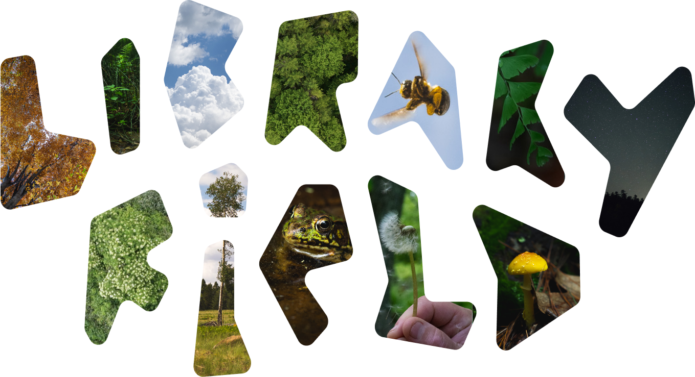
            <p class="lg">
                A place-based initiative in Westchester County brought 
                to you by 
                <a href="#metro" class="smooth-scroll">Metropolitan New York Library Council</a>
            </p>
        </section>
        <section id="new-perspectives" class="column">
            <h1>New <span class="perspective-shift">perspectives</span> on the field</h1>
            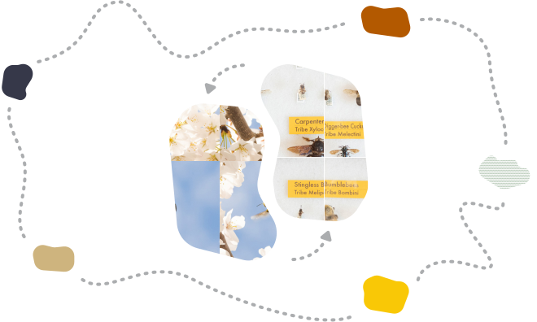
            <p>
                The Library Field is a place to deepen our relationships—between 
                institutions, communities, and individuals—and the earth. 
                By probing the ways that we choose to observe, record, organize, 
                access, and preserve the natural world, we have the opportunity 
                to think critically about our role in natural systems and advance 
                the field of librarianship.
            </p>
        </section>
    </section>
    <section class="page-break">
        <video autoplay loop muted playsinline>
            <source src="video/field-page-break.mp4" type="video/mp4">
        </video>
    </section>
    <section class="page column">
        <section id="relationality" class="column">
            <h1>
                Prioritizing relationality over extraction invites new ways 
                of understanding
            </h1>
            <section class="guiding-ideas row">
                <div class="guiding-idea">
                    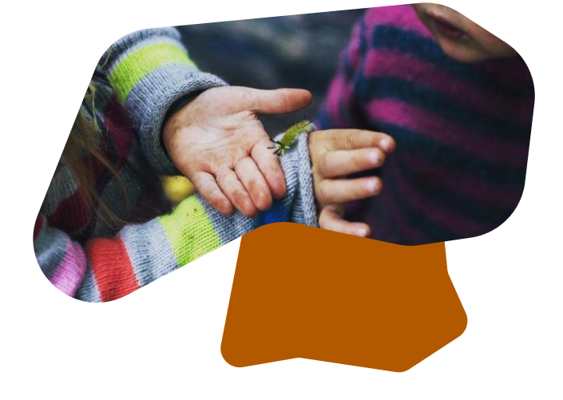
                    <h2>Cultural stewardship</h2>
                    <p>
                        Developing tools, practices, and frameworks that celebrate 
                        the dynamism of culture and place while thinking critically 
                        about traditional forms of documentation and preservation.
                    </p>
                </div>
                <div class="guiding-idea stagger">
                    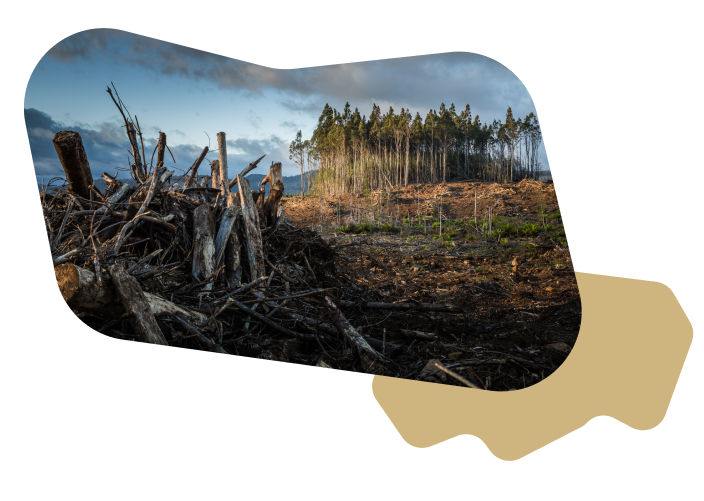
                    <h2>Climate justice</h2>
                    <p>
                        Understanding and mitigating climate change is an essential 
                        but insufficient step towards ensuring a safe and vibrant 
                        future for all of Earth's inhabitants.
                    </p>
                </div>
                <div class="guiding-idea">
                    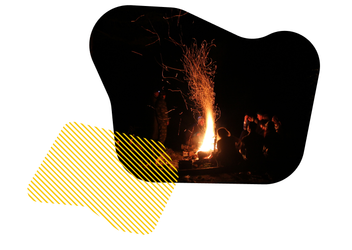
                    <h2>Cultivating awareness & solidarity</h2>
                    <p>
                        Self-actualization requires developing relationships beyond 
                        humans and the constructed world; movement towards building 
                        empathy with all things.
                    </p>
                </div>
            </section>
        </section> 
        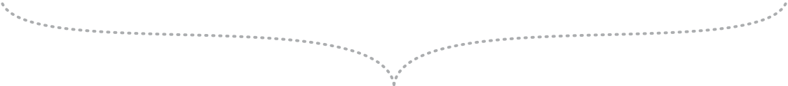 
        <section id="connection" class="column">
            <h1>
                Growing through concentric connection with partners both 
                local and global
            </h1>
            <section id="concentric-infographic">
                <section class="partner" id="sdg">
                    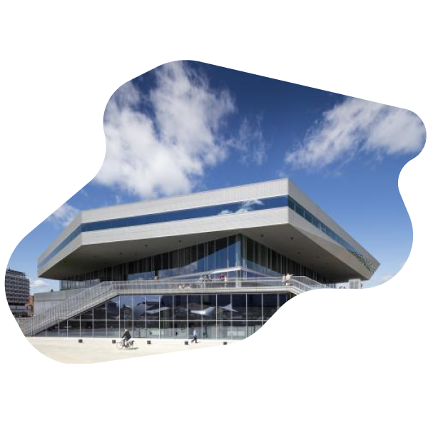
                    <div class="partner-info">
                        <h3>
                            <a href="https://www.dokk1.dk/english" target="_blank">SDG Lab</a>
                        </h3>
                        <p class="sm">
                            Aarhus Public Libraries
                        </p>
                        <span class="tag">
                            Global
                        </span>
                    </div>
                </section>
                <section class="partner" id="lib-farm">
                    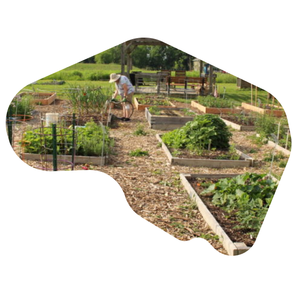
                    <div class="partner-info">
                        <h3>
                            <a href="https://www.nopl.org/library-farm/" target="_blank">Library Farm</a>
                        </h3>
                        <p class="sm">
                            Northern Onondaga Public Library
                        </p>
                        <span class="tag">
                            Regional
                        </span>
                    </div>
                </section>
                <section class="partner" id="greenpoint">
                    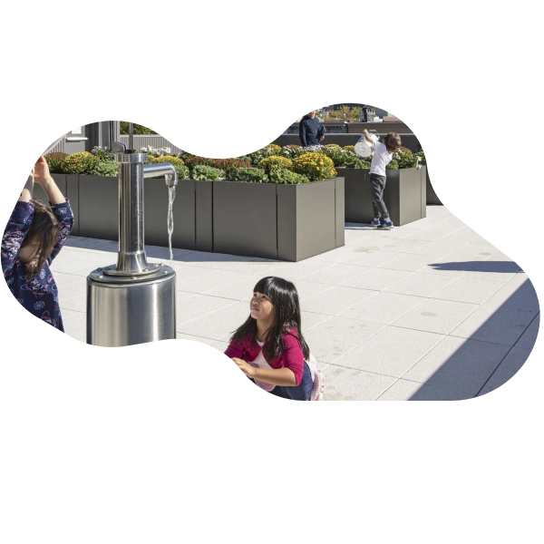
                    <div class="partner-info">
                        <h3>
                            <a href="https://www.marblefairbanks.com/portfolio/greenpoint-library-and-environmental-education-center/" target="_blank">Greenpoint Library and Environmental Center</a>
                        </h3>
                        <p class="sm">
                            Brooklyn Public Library
                        </p>
                        <span class="tag">
                            Local
                        </span>
                    </div>
                </section>
                <section class="partner" id="nat-lib">
                    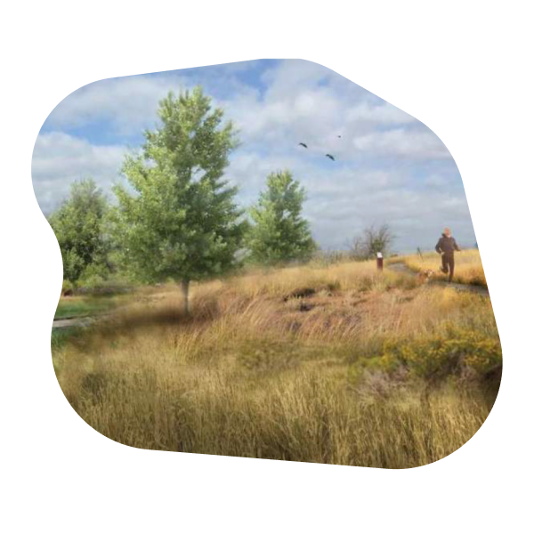
                    <div class="partner-info">
                        <h3>
                            <a href="https://www.anythinklibraries.org/news-item/anythink-libraries-and-city-thornton-host-anythink-nature-library-information-session" target="_blank">Nature Library Project</a>
                        </h3>
                        <p class="sm">
                            Anythink Libraries
                        </p>
                        <span class="tag">
                            National
                        </span>
                    </div>
                </section>
                <section id="concentric-diagram">
                    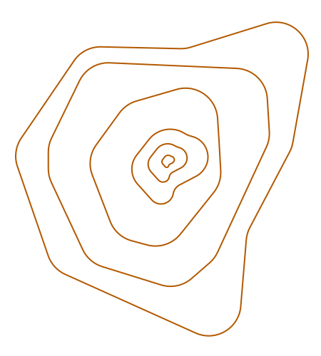
                    
                    
                    
                    
                </section>
            </section>
        </section>
    </section>
    <section id="fall" class="page-break">
    </section>
    <section class="full-page" id="metro">
        <section class="page column">
            <h1>METRO</h1>
            <p>
                <a href="https://metro.org/" target="_blank">METRO</a> 
                works to create a sustainable culture of 
                <span class="highlight">creativity</span>, 
                <span class="highlight">collaboration</span>, 
                and <span class="highlight">open exchange</span> for libraries, archives, 
                museums, and cultural institutions in the Metropolitan New 
                York region and around the world. We accomplish our mission 
                through leadership, grantmaking, resource sharing, professional 
                learning, research, technology services, 
                <span class="highlight">creative practice</span>, and more.
            </p>
            <section class="row" id="metro-vendiagram">
                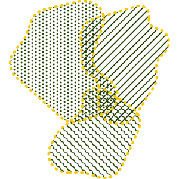
                <h3 class="item-a">Spirit of Interrogation</h3>
                <h3 class="item-b">Commitment to networked knowledge</h3>
                <h3 class="item-c">Supportive yet self-guided environment</h3>
            </section>
        </section>
    </section>
    <section id="winter" class="page-break">
    </section>
    <section class="full-page" id="evolving">
        <section class="page column">
            <h1>Perpetually evolving</h1>
            <p>
                The Library Field wants to know what you hope from a shared 
                outdoor space organized by New York City and Westchester County libraries.
            </p>
            <section class="evolving-timeline">
                <section class="year right" id="year2024">
                    <div class="year-info"> 
                        <h2>2024</h2>
                        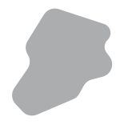
                    </div>
                    <ul>
                        <li>Find facilitator / other consultants</li>
                        <li>Identify focus groups, key stakeholders / categories</li>
                        <li>Find 3-4 locations for events</li>
                    </ul>
                </section>
                <section class="year left">
                    <div class="year-info">
                        <h2>2025</h2>
                        
                    </div>
                    <ul>
                        <li>Determine permanent location?</li>
                        <li>Hire engineer/architect?</li>
                        <li>Hire builder?</li>
                    </ul>
                </section>
                <section class="year right">
                    <div class="year-info">
                        <h2>2026</h2>
                        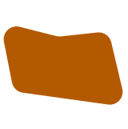
                    </div>
                    <ul>
                        <li>Hire field director?</li>
                        <li>Light construction (bathrooms, covered meeting areas, trail maintenance, parking)?</li>
                        <li>Participatory design and ongoing programming?</li>
                    </ul>
                </section>
                <section class="year next">
                    <div class="year-info">
                        <h2>What's Next?</h2>
                        
                    </div>
                </section>
            </section>
        </section>
    </section>
    <section id="spring" class="full-page">
        <section class="page column" id="contact">
            <section id="imagine">
                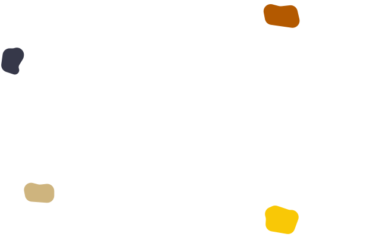
                <div class="cta">
                    <h1>Imagine the <span class="perspective-shift">field</span></h1>
                    <div class="button-container">
                        <a href="mailto:libraryfield@metro.org"><button class="white grow">Reach Out</button></a>
                        <!-- BUTTON FOR REPLACING WITH RFP -->
                        <a href="https://metro.org/jobs/community-engagement-consultant" target="blank"><button class="white grow">Jobs</button></a>
                    </div>
                </div> 
            </section>
        </section>
        <section class="conclusion">
            <section class="page column" id="inspiration">
                <h2>Inspiration</h2>
                <section class="row">
                    <div class="row-column">
                        <h3>Centering time / designing for the continuum</h3>
                        <ul>
                            <li><a href="https://www.seedvault.no/" target="_blank">Svalbard Global Seed Vault</a></li>
                            <li><a href="https://www.futurelibrary.no/" target="_blank">Future Library</a></li>
                            <li><a href="https://longnow.org/" target="_blank">Long Now Foundation</a></li>
                            <li><a href="https://archive.org/web/" target="_blank">Internet Archive WayBack Machine</a></li>
                            <li><a href="https://www.hcn.org/issues/54.11/antidotes-for-ecological-forgetfulness" target="_blank">Antidotes for Ecological Forgetfulness</a></li>
                        </ul>
                    </div>
                    <div class="row-column">
                        <h3>Minimally-invasive design / co-existence</h3>
                        <ul>
                            <li><a href="https://www.pinal.gov/1204/Peralta-Regional-Park" target="_blank">Peralta Regional Park</a></li>
                            <li><a href="https://www.nhm.ac.uk/about-us/urban-nature-project" target="_blank">Urban Nature Project</a></li>
                            <li><a href="https://www.freeforestschool.org/" target="_blank">Free Forest School</a></li>
                            <li><a href="https://www.bdcnetwork.com/leo-dalys-minimally-invasive-approach-remote-field-site-design-bdcs-2014-great-solutions-report" target="_blank">Near-zero ecological disturbance architecture</a></li>
                        </ul>
                    </div>
                    <div class="row-column">
                        <h3>New perspectives / questioning assumptions</h3>
                        <ul>
                            <li><a href="https://www.blacklandproject.org/" target="_blank">Black/Land Project</a></li>
                            <li><a href="https://www.haystack-mtn.org/" target="_blank">Haystack Mountain School of Crafts</a></li>
                            <li><a href="https://www.upress.umn.edu/book-division/books/hyperobjects" target="_blank">Hyperobjects</a></li>
                            <li><a href="https://www.williamcronon.net/writing/Trouble_with_Wilderness_Main.html" target="_blank">The Trouble with Wilderness</a></li>
                        </ul>
                    </div>
                </section>
            </section>
            <section class="page column" id="credits">
                <h2>Credits</h2>
                <section class="row">
                    <div class="row-column photos">
                        <h3>Photos</h3>
                        <div class="row stacking-list">
                            <ul>
                                <li>Anythink Libraries</li>
                                <li>Brooklyn Public Library</li>
                                <li>Aarhus Public Libraries</li>
                                <li>Eugenia Cheskidova</li>
                                <li>Free Forest School</li>
                            </ul>
                            <ul>
                                <li>Froghouse</li>
                                <li>John Thomas</li>
                                <li>Matt Palmer</li>
                                <li>Northern Onondaga Public Library</li>
                            </ul>
                        </div>
                    </div>
                    <div class="row-column type-and-design">
                        <div class="typography row-column">
                            <h3>Typography</h3>
                            <p>
                                <a href="https://github.com/googlefonts/Tilt-Fonts" target="_blank">Tilt Neon by Andy Clymer</a>
                            </p>
                        </div>
                        <div class="design row-column">
                            <h3>Design</h3>
                            <a href="https://frog.house" target="_blank">
                                
                            </a>
                        </div>
                    </div>
                </section>
            </section>
            <footer class="page">
                <section class="logos row">
                    
                    <a href="https://metro.org/" target="_blank">
                        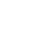
                    </a>
                </section>
                <p>
                    Library Field is a project of 
                    <a href="https://metro.org/" target="_blank">Metropolitan New York Library Council</a>
                </p>
                <div class="button-container row">
                    <a href="mailto:libraryfield@metro.org"><button class="white">Reach Out</button></a>
                </div>
            </footer>
        </section>
    </section>
</body>
